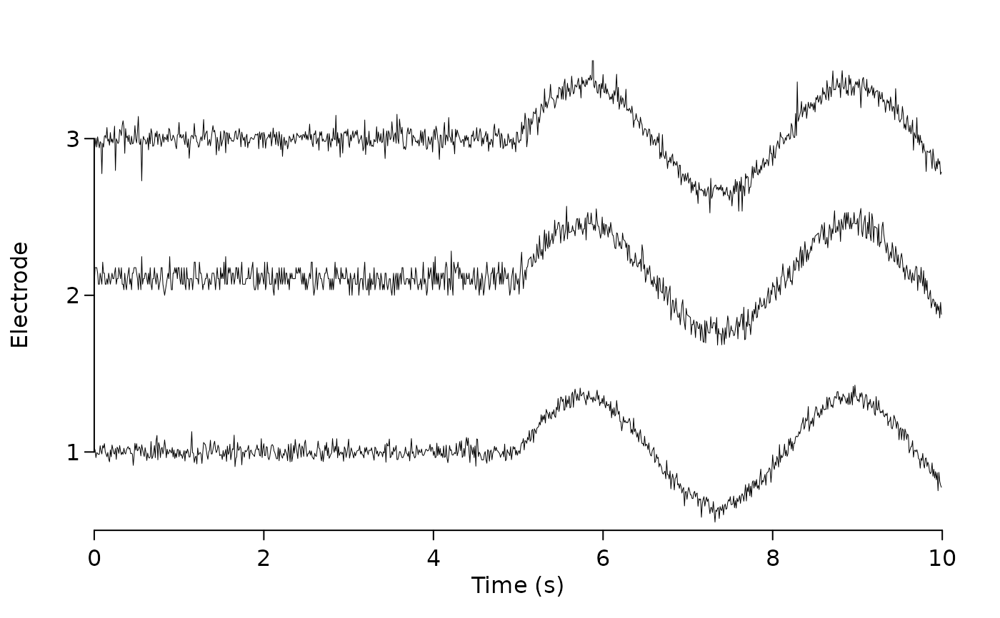
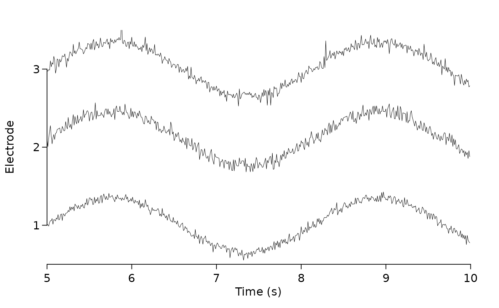
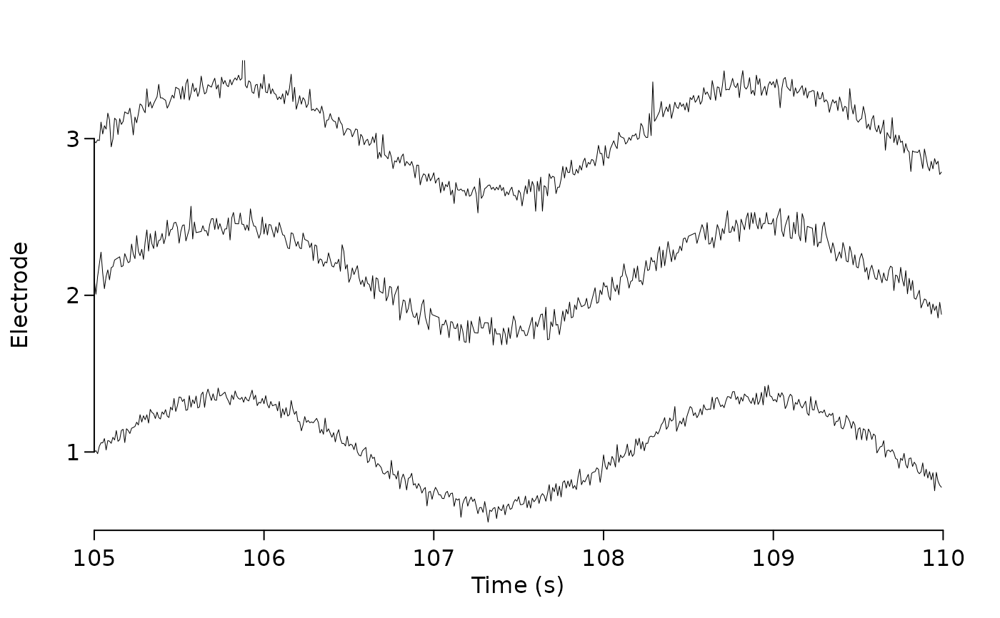

Plot one or more signal traces in the same figure
Usage
plot_signals(
signals,
sample_rate = 1,
col = graphics::par("fg"),
space = 0.995,
space_mode = c("quantile", "absolute"),
start_time = 0,
duration = NULL,
compress = TRUE,
channel_names = NULL,
time_shift = 0,
xlab = "Time (s)",
ylab = "Electrode",
lwd = 0.5,
new_plot = TRUE,
xlim = NULL,
cex = 1,
cex.lab = 1,
mar = c(3.1, 2.1, 2.1, 0.8) * (0.25 + cex * 0.75) + 0.1,
mgp = cex * c(2, 0.5, 0),
xaxs = "r",
yaxs = "i",
xline = 1.5 * cex,
yline = 1 * cex,
tck = -0.005 * (3 + cex),
...
)Arguments
- signals
numerical matrix with each row to be a signal trace and each column contains the signal values at a time point
- sample_rate
sampling frequency
- col
signal color, can be vector of one or more
- space
vertical spacing among the traces; for values greater than 1, the spacing is absolute; default is
0.995; for values less equal to 1, this is the percentile of the whole data. However, the quantile mode can be manually turned off is"absolute"is required; seespace_mode- space_mode
mode of spacing, only used when
spaceis less equal to one; default is quantile- start_time
the time to start drawing relative to the first column
- duration
duration of the signal to draw
- compress
whether to compress signals if the data is too large
- channel_names
NULLor a character vector of channel names- time_shift
the actual start time of the signal. Unlike
start_time, this should be the actual physical time represented by the first column- xlab, ylab, lwd, xlim, cex, cex.lab, mar, mgp, xaxs, yaxs, tck, ...
- new_plot
whether to draw a new plot; default is true
- xline, yline
the gap between axis and label
Examples
n <- 1000
base_signal <- c(rep(0, n/2), sin(seq(0,10,length.out = n/2))) * 10
signals <- rbind(rnorm(n) + base_signal,
rbinom(n, 10, 0.3) + base_signal,
rt(n, 5) + base_signal)
plot_signals(signals, sample_rate = 100)

plot_signals(signals, sample_rate = 100, start_time = 5)

plot_signals(signals, sample_rate = 100,
start_time = 5, time_shift = 100)
